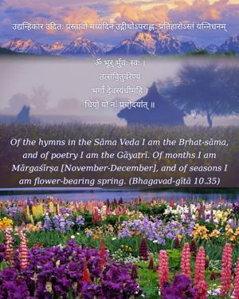
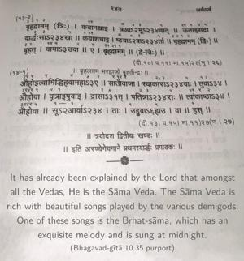
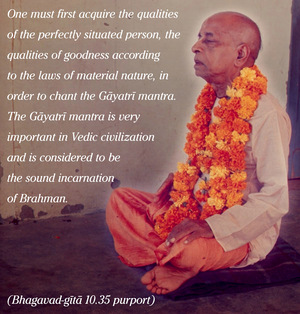

Of the hymns in the Sāma Veda I am the Bṛhat-sāma, and of poetry I am the Gāyatrī. Of months I am Mārgaśīrṣa [November-December], and of seasons I am flower-bearing spring.



It has already been explained by the Lord that amongst all the Vedas, He is the Sāma Veda. The Sāma Veda is rich with beautiful songs played by the various demigods. One of these songs is the Bṛhat-sāma, which has an exquisite melody and is sung at midnight.
In Sanskrit, there are definite rules that regulate poetry; rhyme and meter are not written whimsically, as in much modern poetry. Amongst the regulated poetry, the Gāyatrī mantra, which is chanted by the duly qualified brāhmaṇas, is the most prominent. The Gāyatrī mantra is mentioned in the Śrīmad-Bhāgavatam. Because the Gāyatrī mantra is especially meant for God realization, it represents the Supreme Lord. This mantra is meant for spiritually advanced people, and when one attains success in chanting it, he can enter into the transcendental position of the Lord. One must first acquire the qualities of the perfectly situated person, the qualities of goodness according to the laws of material nature, in order to chant the Gāyatrī mantra. The Gāyatrī mantra is very important in Vedic civilization and is considered to be the sound incarnation of Brahman. Brahmā is its initiator, and it is passed down from him in disciplic succession.
The month of November-December is considered the best of all months because in India grains are collected from the fields at this time and the people become very happy. Of course spring is a season universally liked because it is neither too hot nor too cold and the flowers and trees blossom and flourish. In spring there are also many ceremonies commemorating Kṛṣṇa’s pastimes; therefore this is considered to be the most joyful of all seasons, and it is the representative of the Supreme Lord, Kṛṣṇa.